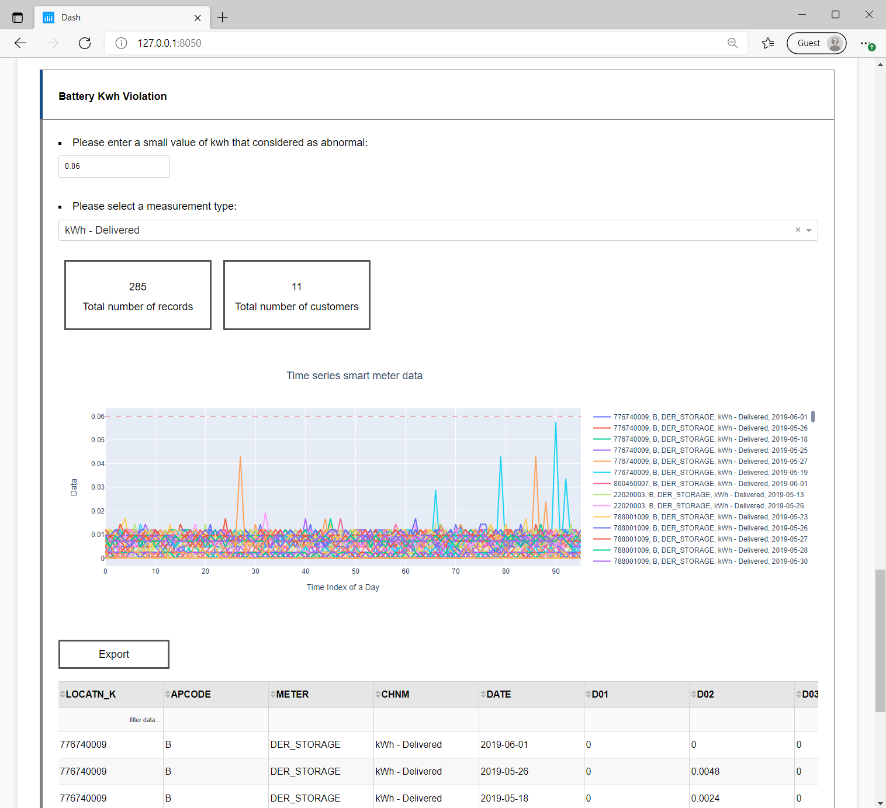

As the fact that utilities are suffering from a lot of smart meter data issues being revealed through the previous project, we determined that it is meaningful to design a big data software to monitor smart meter data and gain awareness of special situations. The primary objective of this project is to develop a software to visualize the smart meter data, provide indicators to mismatch records, meter communication issues, special or suspect events, and conduct machine learning, such as clustering and forecasting, on smart meter data. Other capabilities include using various types of machine learning methods for data analysis, such as user behavior analysis, AC failing prediction (possibly), and identification of the level of residential EV charging point (possibly). Therefore, this project aims at building a user-friendly interface to aid SRP to quickly locate meters of interest, identify the special events occurring on these meters and manage the meter data correctly and efficiently. Specifically, the following functions and features are achieved or to be achieved in the software:.
If you would like to modify the code, please check the python library dependency below with the right version. A universal installation method (that works on Windows, Mac OS X, Linux, ..., and always provides the latest version) is to use pip:
$ python -m pip install --upgrade pip setuptools
$ python -m pip install --upgrade dash (preferably, version >= 1.21.0)
$ python -m pip install --upgrade dash-bootstrap-components (preferably, version >= 0.12.2) $ python -m pip install --upgrade dash_auth (preferably, version >= 1.4.1)
$ python -m pip install --upgrade kaleido(preferably, version >= 0.2.1)
$ python -m pip install --upgrade pandas (preferably, version >= 1.3.1)
$ python -m pip install --upgrade numpy (preferably, version >= 1.21.1)
$ python -m pip install --upgrade plotly (preferably, version >= 5.1.0)
$ python -m pip install --upgrade sklearn (preferably, version >= 0.0)
$ python -m pip install --upgrade fpdf (preferably, version >= 1.7.2)
$ python -m pip install --upgrade docx (preferably, version >= 0.2.4)
*Python version 3.7 or greater is required.
The software is developed to visualize various sources of information, give indications to mismatch records, meter communication issues, special or suspect events, and conduct machine learning, such as clustering and forecasting, on smart meter data. These instructions will get you a copy of the project up and running on your local machine for development and testing purposes.

Description: In this tab, you can drag, drop or select a file with .csv format which contains the following keys: 'LOCATN_K', 'APCODE', 'METER', 'CHNM', and 'DATE'. The tab provides the file name, important information in the file, and the file contents for you to check if this is the correct file you plan to analyze.
An example of the output information is given below.
Description: In this tab, you can visualize the uploaded time series data by changing the location number, smart meter code, and smart meter measurement type.
An example of the output time series visualization is given below.
Description: In this tab, you can check the distribution of a certain smart meter measurement by selecting the type of the measurement you would like to analyze. Ten statistical measurements are calculated to help you to understand the data better. The histogram and the boxplot are generated to provide distribution visualizations for the selected property.
An example of the output is given below.
Description: In the first section, the software will automatically pull out some inconsistent information of the battery configuration from the database.
In the second section, the software will automatically pull out some duplicated battery meter records from the uploaded file.
Description: In the third section, the software calculates the threshold of the voltage regulation according to the user entered value. The software filters out any data series that violate the threshold at least once. The threshold is calculated as follows: [ max(the mean value of the voltage - user entered value, 0), the mean value of the voltage + user entered value] (V). Two statistical information of the violations and a visualization of the violating time series data will be provided.
Description: In the fourth section, the software filters out any data series that never exceed the threshold entered by the user. Two statistical information of the violations and a visualization of the violating time series data are provided.

Description: In this tab, the user can adjust the four variables such as the meter type, configuration, rate plan and season to see the behavior patterns in the time-series graph. Three most typical behavior patterns will be visualized. And the abnormal customers in each behavior pattern is output for visualization if there is sufficient data.
An example of the output is given below.
Shuman Luo: sluo31@asu.edu, Ted Kim